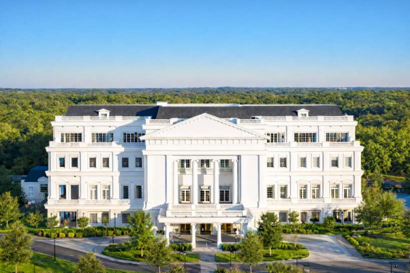

THE EQUESTRIAN MANOR / WEC02 / 05DEPORTE · HOSPITALIDAD · EVENTOSUna conexión
Una conexión
con el mundo.
World Equestrian Center reúne competencias, hoteles, gastronomía y espacios para eventos. Un referente para entender la identidad ecuestre de Ocala.
Visitar sitio oficial del WEC ↗Ver ubicación en Google Maps ↗Fotografía: World Equestrian Center